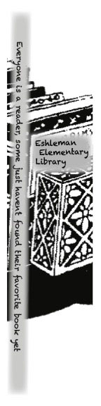

Printing |
||
| home Cereal Box Project Commercial Project bookmark Project | ||
|
 Bookmark for Eshleman Elementary School LibraryEshleman Elementary School |
Our goal was to design, print, and finish a custom bookmark for Eshleman Elementary School Library using offset lithography printing. The specifications were to be: 2" x 8", #80 cover uncoated white paper, ink was one color without bleeds, and line art only. We made our designs in InDesign as 2" x 8" .125 margin clipart to be printed in black only. We had to start by deciding the context of the content that would inform our ideas for the cover art on the bookmarks. We did this by generating five sketches, a process we learned earlier in the semester, and then selected our best sketch to bring into InDesign. We finalized our rough comprehensive layouts in InDesign. We grouped our bookmark files with others by exporting to a shared folder to create a final Plate for printing with other students desgins to make one print proof with multiple designs. We actually printed the plate on the Presstek Platemaker, then took the plate to the Ryobi press, and ran the plate through the print with our paper. After drying for 24 hours we cut the individual bookmark designs from the layout and bundled them up to ship out to the library. | |